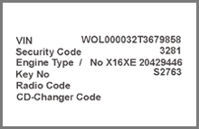

Conditions for programming:
Faults in the immobiliser system must be repaired and fault codes erased before the programming of keys can be done.
For keyprogramming all keys must be available, old and new. All keys have to be reprogrammed.
To program the keys a security code must be entered (picture 1). The valid security code can be found in a Car Pass among other codes (picture 2). The safety code is a safety measure to protect the vehicle from unauthorised tampering.

Picture 1
Picture 2
Programming:
Enter the security code (XXXX), press "OK".
Enter the number of keys (1-5), press "OK".
Make sure that the ignition is off and the key is removed, press "OK".
Insert the key that is going to be programmed in the ignition lock, press "OK".
Turn the ignition on and off, press "OK".
Repeat step 4 and 5 until the total number of keys are programmed.
Incorrect input of the security code three times or more will lead to a security waiting period (see data list). During this waiting period it is not possible to enter the code. The security waiting time will be doubled for every incorrect input.
If the immobiliser control unit is replaced or wrongly programmed it has to be programmed before you can proceed with programming the keys.
Programming is not possible with low battery voltage.